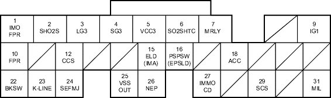

Fuel and Emissions Systems
|
11-181 |
ECM/PCM Inputs and Outputs at Connector E (31P)

Wire side of female terminals
NOTE: Standard battery voltage is 12 V.
Terminal number |
Wire colour |
Terminal name |
Description |
Signal |
16*12 |
LT GRN/BLK |
PSPSW (POWER STEERING PRESSURE SWITCH SIGNAL) |
Detects PSP switch signal |
At idle with steering wheel in straight ahead position: 0 V At idle with steering wheel at full lock: battery voltage |
16*11 |
LT GRN/BLK |
EPSLD (ELECTRICAL POWER STEERING LOAD DETECT) |
Detects power steering load signal |
At idle with steering wheel in straight ahead position: 0 V At idle with steering wheel at full lock: battery voltage momentarily |
18 |
RED |
ACC (A/C CLUTCH RELAY) |
Drives A/C clutch relay |
With compressor ON: about 0 V With compressor OFF: battery voltage |
22 |
WHT/BLK |
BKSW (BRAKE PEDAL POSITION SWITCH) |
Detects brake pedal position switch signal |
With brake pedal released: about 0 V With brake pedal pressed: battery voltage |
23 |
LT BLU |
K-LINE |
Sends and receives scan tool signal |
With ignition switch ON (II): pulses or battery voltage |
24 |
YEL |
SEFMJ |
Communicates with multiplex control unit |
With ignition switch ON (II): about 5 V With engine running under load: pulses |
25*10 |
BLU/WHT |
VSSOUT (VEHICLE SPEED SENSOR (VSS) OUTPUT SIGNAL) |
Sends vehicle speed sensor signal |
Depending on vehicle speed: pulses |
26 |
BLU |
NEP (ENGINE SPEED PULSE) |
Outputs engine speed pulse |
With engine running: pulses |
27*13 |
RED/BLU |
IMOCD (IMMOBILISER CODE) |
Detects immobiliser signal |
|
29 |
BRN |
SCS (SERVICE CHECK CONNECTOR) |
Detects service check signal |
With the service check signal shorted with the PGM Tester: about 0 V With the service check signal opened: about 5 V battery voltage |
31 |
GRN/ORN |
MIL (MALFUNCTION INDICATOR LAMP) |
Drives MIL |
With MIL turned ON: about 0 V With MIL turned OFF: battery voltage |
|
*1: with TWC model (except KV model) *2: without TWC model *3: D15Y4, D17A2 (KU, KQ, KZ, FO models) engines *4: with cruise control *5: D15Y4, D17A2 (KU model) engines *6: D15Y4, D16W8, D16W9, D17A2, D17A5, D17Z3, D17Z4 engines *7: D16W8, D16W9 engines *8: except D15Y2, D15Y3, D15Y5, D15Y6 engines *9: D15Y6 engine *10: D15Y4, D17A2 (KU, KQ, KZ, FO models), D17Z1 (KQ model) engines *11:KU model *12 except KU model |
*13: D15Y6, D15Y3 (KY model with immobiliser, KN model), D15Y5, D15Y4, D17Z1 (KQ, KZ models), D17A1 (KK model), D17A2 (except MA model), D17A5 (KY model with immobiliser, KN model) engines *14: except D15Y3 (PA, KW, KT, KN models), D16W9 (PA model), D17A5 (KN model) engines *15: A/T and M/T *16: CVT *17: A/T and CVT *18: A/T *19:except D15Y6, D15Y3 (KY model with immobiliser, KN model), D15Y5, D15Y4, D17Z1 (KQ, KZ models), D17A1 (KK model), D17A2 (except MA model), D17A5 (KY model with immobiliser, KN model) engine |